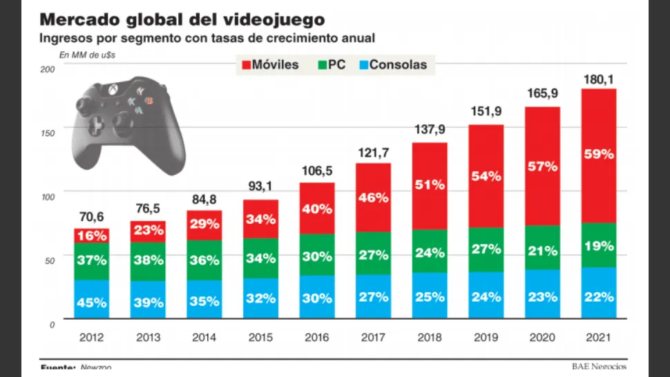

Bienvenidos a nuestro rincón de videojuegos, un espacio dedicado a todos los apasionados de este fascinante mundo. Aquí, en este blog, nos embarcaremos en un viaje a través de la historia, la tecnología, la cultura y el arte de los videojuegos. Los videojuegos han evolucionado desde sus humildes comienzos en los años 70 y 80, transformándose de simples juegos de arcade a complejas obras de arte interactivas. Hoy en día, los videojuegos son una forma de entretenimiento que rivaliza, y a menudo supera, a las películas y la televisión en términos de popularidad y alcance. Pero los videojuegos son mucho más que mero entretenimiento. Son una forma de expresión artística, una herramienta educativa y una ventana a mundos y experiencias inimaginables. Los videojuegos pueden transportarnos a lugares lejanos, permitirnos asumir roles y habilidades increíbles, y proporcionarnos una forma de interactuar y conectarnos con personas de todo el mundo. En este blog, exploraremos todos estos aspectos de los videojuegos y más. Analizaremos los últimos lanzamientos, discutiremos sobre los clásicos atemporales, y nos sumergiremos en los detalles técnicos de cómo se crean y funcionan los videojuegos. También hablaremos sobre la cultura de los videojuegos, desde las comunidades de jugadores hasta los torneos de esports, y examinaremos cómo los videojuegos están cambiando y moldeando nuestra sociedad y cultura. Además, este blog será un recurso para los jugadores de todos los niveles. Ya seas un jugador casual que disfruta de los juegos para relajarte después de un largo día, o un jugador hardcore que busca dominar el último juego competitivo, encontrarás contenido útil e interesante aquí. Proporcionaremos guías de juego, consejos y trucos, y análisis en profundidad para ayudarte a mejorar tus habilidades y disfrutar aún más de tus juegos favoritos. Pero este blog no es solo para los jugadores. También es para los padres que quieren entender mejor los juegos a los que juegan sus hijos, para los educadores que buscan incorporar los videojuegos en el aula, y para cualquiera que esté interesado en el impacto de los videojuegos en nuestra sociedad. Así que, ya seas un veterano de los videojuegos o alguien que acaba de descubrir este maravilloso mundo, te invitamos a unirte a nosotros en este viaje. Exploraremos juntos los videojuegos, celebraremos sus logros, aprenderemos de sus desafíos y descubriremos lo que nos depara el futuro en este emocionante campo. ¡Bienvenidos a nuestro blog de videojuegos! ¡Empecemos este increíble viaje juntos!
Este es un hipervínculo a Steam; la tienda de videojuegos virtual más conocida y utilizada | Videojuego | Desarrolladora | Fecha de salida | Breve sinopsis |
|---|---|---|---|
| Borderlands | GearBox Software | 20 octubre 2009 | Borderlands es un videojuego de disparos en primera persona de ciencia ficción con elementos de los videojuegos de rol |
| Dark souls | FromSoftware | 2011 | El juego tiene lugar en el reino ficticio de Lordran. Los jugadores asumen el papel de un personaje humano maldito que se propone descubrir el destino de los humanos no muertos como ellos. |
| Far cry | Crytek | 2004 | La historia se centra en Jack Carver, un soldado retirado de las fuerzas especiales que vive en el archipiélago de Micronesia. Su trabajo consiste en alquilar botes, pero es contratado por una periodista para conocer y explorar la región. Durante la exploración, Jack intentará desbaratar los planes de unos mercenarios y rescatar a la periodista secuestrada. |
| Blasphemous | The Game Kitchen | 10 de septiembre de 2019 | Una terrible maldición, llamada El Milagro, ha caído sobre la tierra de Cvstodia y sobre todos sus habitantes. El protagonista, a quien se denomina como el Penitente, único superviviente de la hermandad del Lamento Mudo, que lleva una máscara y un casco que consiste en una corona de espinas y un capirote metálico, se encuentra atrapado en un ciclo de penitencia donde muere y resucita constantemente, por lo que debe hacer frente a su particular via crucis y llegar al origen de su angustia, con el que no sólo acabaría con esta, también terminaría con la maldición que alberga Cvstodia. |
| Hollow Knight | Team Cherry | 24 de febrero de 2017 | El videojuego cuenta la historia del Caballero, en su búsqueda para descubrir los secretos del largamente abandonado reino de Hallownest, cuyas profundidades atraen a los aventureros y valientes con la promesa de tesoros o la respuesta a misterios antiguos. |